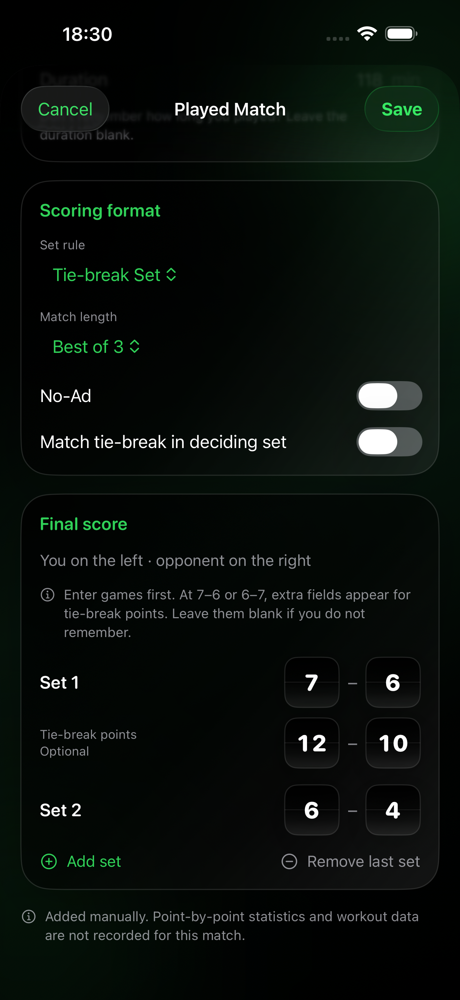
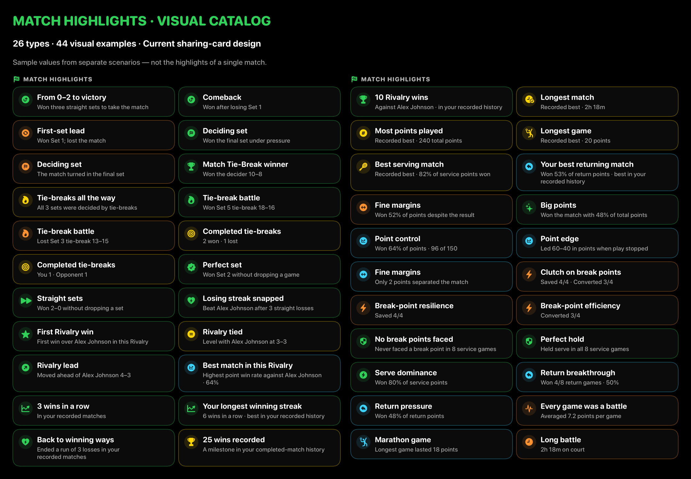
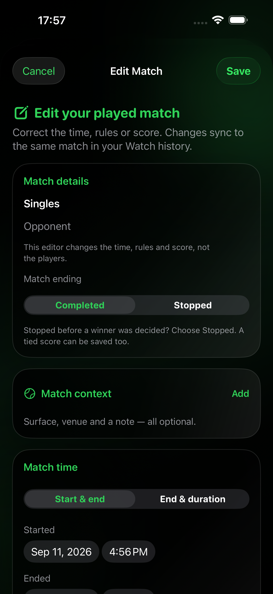
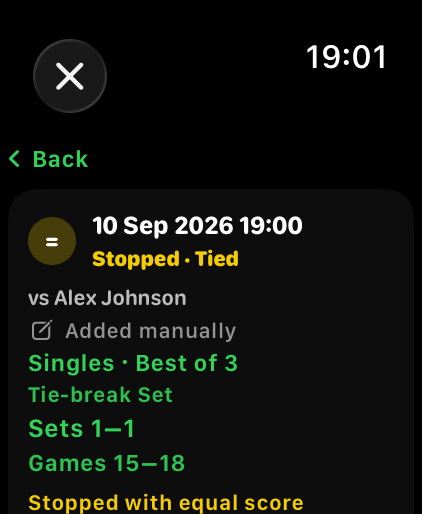
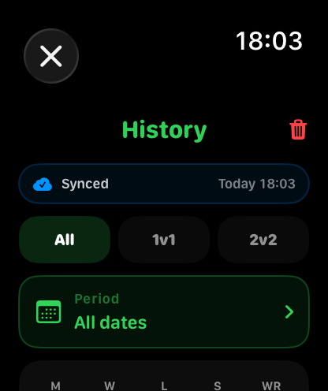
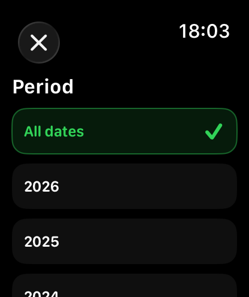
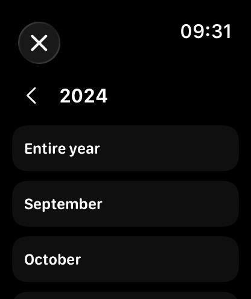
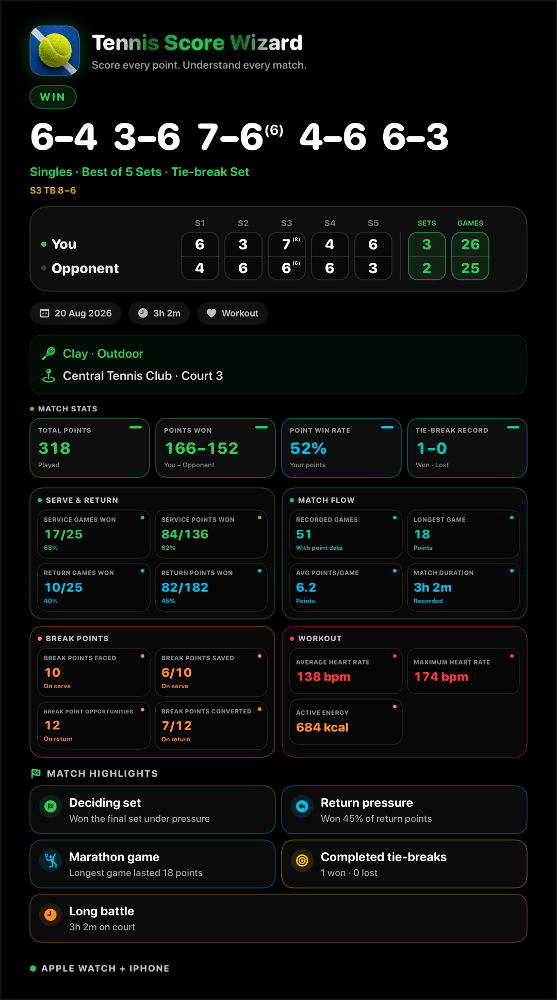
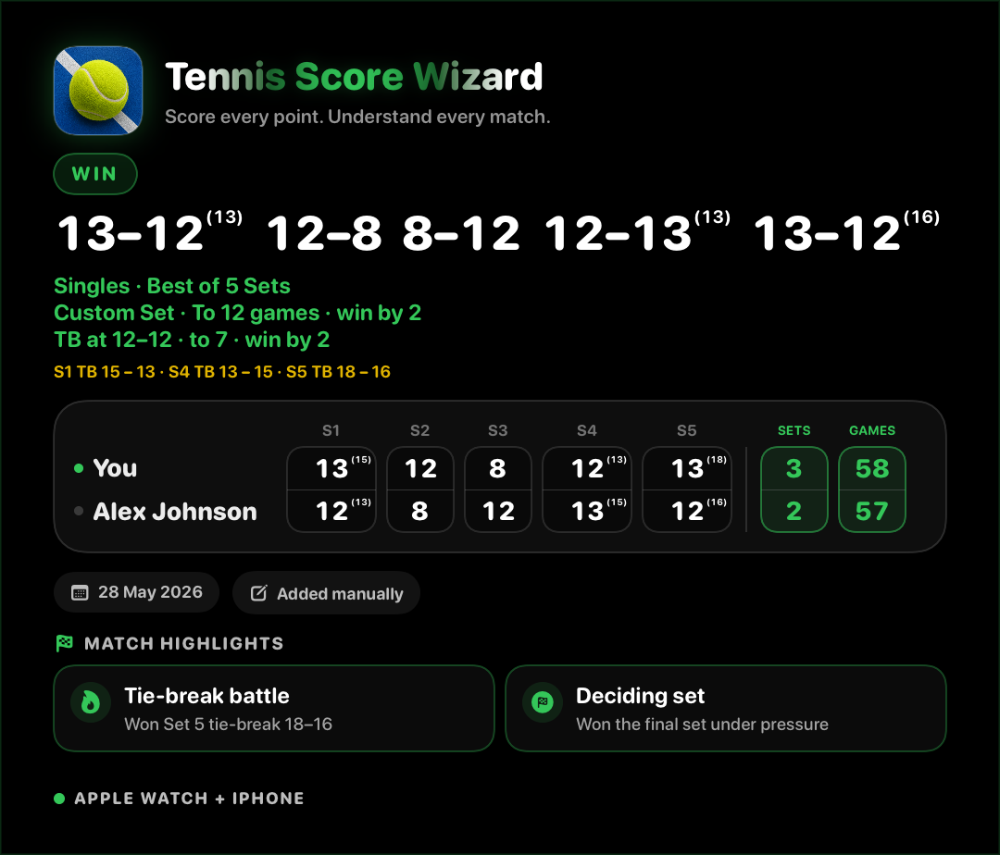

Apple Watch 전용
Apple Watch에 직접 설치해 손목 위에서 경기 전체를 관리하세요. iPhone용 컴패니언 앱은 필요하지 않습니다.
- One Set, Short Sets, No‑Ad 및 Custom Set
- 자동 통계 및 iCloud 경기 동기화
- 건강 앱에 선택적으로 운동 기록
- Watch 경기 기록의 연도·월 필터
Standalone 또는 Companion으로 Watch에서 실시간 점수를 기록하세요. iPhone의 Companion에서는 지난 경기 추가, 장소 기록, 라이벌전과 하이라이트 확인, 결과 공유도 가능합니다. 직접 입력한 경기는 나중에 수정할 수 있으며, 시계의 경기 기록은 연도와 월로 필터링할 수 있습니다.
두 버전 모두 Apple Watch의 모든 점수 기록 기능을 제공합니다. Apple Watch만 사용하려면 Standalone을, iPhone 앱까지 사용하려면 Companion을 선택하세요. 두 앱은 동일한 저장 경기 기록을 iCloud로 동기화할 수 있습니다.
Apple Watch에 직접 설치해 손목 위에서 경기 전체를 관리하세요. iPhone용 컴패니언 앱은 필요하지 않습니다.
완전한 Apple Watch 앱에 iPhone의 경기 추가, 코트·메모 저장, 성적 확인과 하이라이트 공유 도구가 더해집니다. 직접 입력한 경기는 나중에 수정할 수 있으며, 시계의 경기 기록은 연도와 월로 필터링할 수 있습니다.
iPhone에서 세트 점수와 기억나는 타이브레이크 점수를 입력하세요. 끝까지 치른 경기, 중간에 중단한 경기, 무승부도 저장할 수 있습니다. 시작과 종료 시각을 입력하거나 소요 시간을 비워 두세요.

코트 표면, 실내·실외, 클럽, 코트와 비공개 메모를 추가하세요. 최근 코트와 즐겨찾기를 다시 선택할 수 있고, Watch로 기록한 지난 경기에도 정보를 넣을 수 있습니다.

경기 상세에서 역전승, 개인 최고 기록, 통산 승수의 이정표 등 데이터로 확인되는 하이라이트를 모두 볼 수 있습니다. 공유 카드에는 그중 흥미로운 항목을 최대 6개 담습니다.

역전승, 접전 끝의 타이브레이크, 승수 이정표와 개인 기록. 26가지 하이라이트 유형을 44개 카드 예시로 만나 보세요.
하나의 경기가 아닌 서로 다른 상황의 예시입니다. 경기 상세에는 해당하는 모든 항목을, 공유 카드에는 최대 6개를 표시합니다.

직접 추가한 경기를 열고 Edit match를 탭하세요. 경기를 삭제하고 다시 입력할 필요 없이 날짜, 시간, 규칙 또는 점수를 수정할 수 있습니다.
저장하면 시계의 경기 기록을 포함해 동일한 기록이 업데이트됩니다. Apple Watch로 기록한 점수는 변경되지 않습니다. 상대 지정과 코트 정보는 각각의 메뉴에서 수정합니다.
경기 추가 및 수정 방법 →
네. 연결된 Companion 시계의 동일한 경기 기록이 업데이트되며, 같은 Apple 계정을 사용하는 Standalone에도 비공개 iCloud를 통해 전달될 수 있습니다. 앱을 최신 상태로 유지하고 동기화가 끝날 때까지 기다려 주세요. 관련 통계와 기록 기반 하이라이트에는 수정된 결과가 반영됩니다. 직접 입력한 경기라는 표시는 유지되며, 기록하지 않은 포인트나 운동 데이터는 만들어지지 않습니다.
직접 추가함으로 표시하고 저장된 결과를 보여 줍니다. 데이터가 없는 포인트 통계나 운동 카드는 표시하지 않습니다.
직접 입력 기능 알아보기 →
영어 앱의 실제 화면에 예시 경기 데이터를 표시했습니다. 점수, 시간, 하이라이트는 앱이 생성한 그대로입니다. 직접 입력한 경기에는 입력한 결과와 그 결과로 확인할 수 있는 요약만 표시됩니다.
지난달 경기인가요, 지난 시즌 경기인가요? 시계의 기록을 연도와 월로 좁히고 단식·복식 필터도 함께 사용하세요. 이전 경기는 탐색할 때 추가로 불러오며, 저장된 기록은 삭제되지 않습니다.
History에서 Period를 탭하세요. 기간을 선택하거나 All dates로 모든 날짜를 표시할 수 있습니다. All, 1v1, 2v2 필터도 함께 사용할 수 있습니다.

저장된 경기가 있는 연도가 표시됩니다. All dates를 선택하면 전체 기록으로 돌아갑니다.

경기가 있는 달을 선택하거나 Entire year로 선택한 연도의 전체 경기를 확인하세요.

테스트 기록을 사용한 Companion과 Standalone의 실제 영어 화면입니다. 경기 기록 필터 사용 방법 →
두 버전에는 같은 Apple Watch 자동 점수 시스템이 있습니다. 공식 단축 형식, No-Ad, Custom Set 설정을 익숙한 코트 위 조작으로 사용하세요.
시간이 부족할 때 한 세트로 전체 경기를 진행하세요.
게임 목표, 필요한 차이, 타이브레이크 시작과 목표를 하나의 설정으로 선택합니다.
6게임 어드밴티지 세트 또는 6–6에서 일반 타이브레이크를 시작합니다.

4게임 선승제로, 3–3 또는 4–4에서 타이브레이크를 시작하고 7점제 또는 4–4 결정 포인트를 선택합니다.

듀스에서 다음 한 포인트로 게임을 결정해 어떤 세트 형식도 빠르게 진행합니다.

최종 스코어, 게임 수, 경기 시간을 카드 하나에서 확인하세요.

패배한 경기의 스코어와 시간을 확인하고, 경기 기록을 열어 자세한 내용을 돌아보세요.

승리·패배·중단 경기를 바로 구분합니다. 1~5세트와 타이브레이크 점수는 계속 읽기 쉽게 표시됩니다.

같은 Apple 계정이면 Standalone과 Companion이 iCloud로 같은 경기를 동기화할 수 있습니다. 계정마다 비공개 기록이 분리됩니다. Watch로 기록하거나 iPhone으로 결과를 추가하세요. 수동 입력 표시, 상대와 경기 정보도 함께 전송되며 동기화에 성공한 경기는 재설치 후 복원할 수 있습니다.
Standalone 또는 Companion으로 경기 점수를 기록하고 경기 기록에서 최근 동기화 상태를 확인하세요.
성공적으로 동기화된 경기 기록은 Tennis Score Wizard 서버가 아니라 Apple 계정의 비공개 CloudKit 데이터베이스에 저장됩니다.

Companion에서 치른 경기를 추가하고 코트 정보를 편집하며 기록된 통계와 비공개 iCloud 상태를 확인하세요.
Companion은 페어링된 기기 사이에서 직접 전송하고, CloudKit은 별도로 안정적인 iCloud 동기화와 복원을 제공합니다. 어느 경로가 먼저 완료되어도 됩니다.
경기 기록에는 Synced, Syncing, Waiting / Saving 또는 Sync paused / Retry 상태가 표시됩니다.
Apple 계정을 변경해도 경기 기록이 섞이지 않습니다. 이전 계정에서 아직 동기화되지 않은 경기는 암호화된 로컬 복구 사본에 보관됩니다.
iCloud를 사용할 수 없어도 점수 기록은 계속할 수 있습니다. 성공적으로 동기화된 경기는 동일한 Apple 계정으로 재설치한 뒤 다시 다운로드할 수 있습니다.
단식 경기 전에 저장된 상대를 선택하면 Tennis Score Wizard가 비공개 상대 전적을 자동으로 만듭니다. 결과, 중요한 포인트, 역전승, 연승, 운동 및 모든 맞대결이 하나의 기록에 모입니다.
릴리스 노트 보기현재 라이벌리는 단식 경기만 사용합니다. 복식은 한 명의 상대를 지정하지 않고 기존과 동일하게 기록됩니다.

단식 설정에서 게스트 또는 저장된 선수를 선택하세요. 짧은 이름이 실시간 점수 화면에 표시되고, 평소의 점수 입력으로 기록이 자동 생성됩니다.


전체 기간, 올해 또는 최근 30일로 필터링하세요. 최근 성적과 전체 기간을 비교하고 모든 맞대결을 열어 실제로 기록된 통계만 확인할 수 있습니다.
승패가 결정된 경기, 승리, 세트, 게임, 타이브레이크 및 매치 타이브레이크.
포인트, 서비스 게임 유지율과 브레이크율, 서브, 리턴 및 중요한 포인트.
첫 세트를 잃은 뒤 거둔 역전승, 연승, 코트 시간, 심박수 및 에너지.


Companion은 완전한 Watch 앱과 iPhone의 직접 입력, 경기 정보, 라이벌전, 하이라이트, 통계와 공유를 제공합니다.
Standalone과 동일하게 경기 설정, 포인트 기록, 서브 위치 확인, 실행 취소, 운동 기록, 경기 기록 및 통계 확인, 컴플리케이션에서 실행까지 모두 할 수 있습니다.


Watch 경기를 살펴보거나 iPhone에서 결과를 추가하세요. 코트와 비공개 메모를 결과 곁에 남기고 실제로 기록된 통계와 운동 데이터를 확인할 수 있습니다.

Standalone에서 할 수 있는 모든 기능을 Apple Watch에서 그대로 이용할 수 있습니다.
날짜, 월 또는 연도별로 저장된 모든 경기를 살펴보고 승리, 패배 및 중단된 경기를 한눈에 확인하세요.
기간과 경기 유형으로 필터링한 뒤 결과, 서브, 리턴, 브레이크 포인트, 운동 및 성적 추세를 분석하세요.
하이라이트 최대 6개와 선택적 코트 정보가 있는 경기, 성적 요약 또는 선택한 추세를 공유하세요. 개인 메모는 비공개입니다.
Watch에서 점수를 기록하거나 iPhone으로 결과를 입력하세요. 경기 기록, 달력, 가능한 통계와 시간에 따른 기록된 성장을 살펴보세요.
최근 결과에서 전체 기록과 점수를 확인하세요. Watch 경기에는 자동 포인트 통계가 있을 수 있으며 수동 입력은 제공한 정보만 보여 줍니다.
Companion에서 최근 결과와 경기를 확인하세요. Watch 기록과 iPhone에서 추가한 경기를 모두 볼 수 있습니다.

완료·중단 경기와 무승부를 경기 유형, 결과, 게임 합계와 알려진 소요 시간으로 확인하세요.
저장 데이터로 확인되는 모든 하이라이트를 표시합니다. 두 세트 열세에서의 역전, 승수 이정표, 최장 연승과 리턴 최고 기록 등이 포함됩니다. 기록 기반 항목은 앱에 저장된 이력이지 전체 선수 경력을 뜻하지 않습니다.

결정 매치 타이브레이크를 일반 세트, 세트 결과 및 총 게임 수와 구분해 확인할 수 있습니다.

서브와 리턴 성적, 경기 흐름, 게임 길이 및 브레이크 포인트 상황을 분석하세요.

iPhone에서 운동 시간, 평균 및 최대 심박수, 활동 에너지를 확인하세요.
경기한 날짜를 확인하고, 같은 날 열린 여러 경기를 살펴보며, 월간 보기와 연간 보기 사이를 이동하세요.

승리, 패배 및 중단된 경기가 실제 경기 날짜에 표시됩니다.

시즌 전체를 훑어보고 경기가 있었던 각 달의 경기 수와 결과를 확인하세요.
7일, 30일, 3개월, 1년 또는 전체 기간을 선택한 뒤 추가 입력 없이 전체, 단식 또는 복식으로 필터링하세요.

선택한 필터에 맞춰 경기 수, 승률, 코트 시간, 세트, 중단 경기 및 최근 결과를 확인하세요.

연승·연패, 최종 세트 결과, 세트 및 게임 승률, 첫 세트 리드 후 승리율, 역전승을 확인하세요.

서브와 리턴 성적을 브레이크 포인트, 득점 패턴, 심박수 및 활동 에너지와 함께 살펴보세요.

전체 전적과 승률, 7점제 및 10점제 전적은 결과가 있을 때만 표시됩니다.
이동 승률, 포인트 승률, 서브 및 리턴 승률을 월별 경기 활동과 최근 월간 요약과 함께 확인하세요.

최대 5개의 해당 경기로 계산한 이동 구간을 통해 최근 결과의 흐름을 확인하세요.

차트를 승리, 포인트, 서브 게임 승리 및 리턴 게임 승리 보기로 전환하세요.
점수에 최대 6개 하이라이트와 선택적인 코트 조건·장소를 담아 공유하세요. 데이터에 맞춰 배치하고 개인 메모는 카드에 넣지 않습니다. 성적과 추세 요약도 공유할 수 있습니다.

Watch로 기록한 경기에 코트 정보를 더하고 원래 점수, 시간과 기록된 통계를 유지한 채 공유하세요. 코트는 포함되지만 비공개 메모는 포함되지 않습니다.

직접 입력한 경기에도 세트 점수와 근거가 있는 하이라이트를 담은 결과 카드를 제공합니다. 빈 운동 패널이나 만들어 낸 포인트 통계는 없습니다.

두 자리 점수도 작은 위첨자로 표시해 기본 세트 점수의 정렬을 유지합니다.

일반 세트와 분리해 [10–7]처럼 명확하게 표시합니다.

통계에서 현재 선택한 기간과 단식, 복식 또는 전체 필터를 그대로 내보냅니다.

선택한 추세를 월별 경기 활동 및 최신 월간 요약과 함께 공유하세요.
경기를 설정하고, 모든 포인트를 기록하고, 서버와 서브 위치를 확인하고, 선택적으로 운동을 기록하고, 경기 기록과 통계를 살펴보세요. 이 모든 기능을 iPhone 없이 Apple Watch에서 이용할 수 있습니다.
iPhone에 의존하지 않고 경기 설정, 모든 포인트 기록, 선택적 운동 기록, 경기 기록 및 자동 통계 확인을 모두 할 수 있습니다.
크고 누르기 쉬운 점수 카드로 0–15–30–40, 듀스, 어드밴티지, 게임, 세트 및 타이브레이크를 자동으로 기록합니다.
경기가 끝나면 일반적인 점수 입력만으로 계산된 포인트, 서브, 리턴, 브레이크 포인트, 타이브레이크 및 경기 흐름 통계를 경기 기록에서 확인할 수 있습니다.
선택적으로 테니스 운동을 건강 앱에 저장하고 평균 심박수, 최대 심박수 및 활동 에너지를 확인하세요.
동전 던지기로 서버 선택, 서브 위치 안내, 서버 전환, 실행 취소, 자동 경기 종료 및 로컬 경기 기록 기능을 이용하세요.
경기 설정, 운동 기록, 실시간 점수 기록, 타이브레이크, 경기 종료, 경기 기록 및 자동 통계로 이어지는 Standalone의 전체 흐름을 Apple Watch에서 확인하세요.
경기 시작 전에 단식 또는 복식, 3세트 또는 5세트 매치, 세트 규칙을 선택하세요.

한 화면에서 첫 서버를 선택하고, 동전 던지기를 사용하고, 운동 기록을 켠 뒤 경기를 시작하세요.
큰 카드로 점수를 기록하는 동안 서버, 서브 위치, 세트, 운동 상태 및 실시간 심박수를 계속 확인할 수 있습니다.

6–6에서 같은 크고 빠른 Apple Watch 점수 컨트롤로 타이브레이크 포인트를 기록하세요.

마지막 세트 전에 세트 스코어가 같다면 7점제 또는 10점제로 대체할 수 있습니다. 2점 차로 이겨야 합니다.

목표 점수, 세트 스코어, 서버 및 포인트가 계속 표시됩니다.
승패가 정해지면 1~5세트를 읽기 쉽게 표시하고 기록 또는 완료로 빠르게 이동할 수 있습니다.
Apple Watch에서 직접 승리, 패배, 중단 경기, 승률 및 저장된 경기를 확인하세요.

저장된 경기를 열어 점수, 게임, 시간, 전체 포인트, 운동 상태 및 중단 경기 상황을 확인하세요.

세트별 요약에서 모든 세트와 기록된 타이브레이크 점수를 확인하세요.

전체 포인트, 획득 포인트, 포인트 승률 및 타이브레이크 전적을 확인하세요.

서브 게임 승리, 서브 포인트 승리, 리턴 게임 승리 및 리턴 포인트 승리를 확인하세요.

기록된 게임, 가장 긴 게임, 게임당 평균 포인트 및 경기 시간을 확인하세요.

맞은 브레이크 포인트, 방어한 브레이크 포인트, 브레이크 기회 및 성공 횟수를 확인하세요.

기록된 운동에서 평균 심박수, 최대 심박수 및 활동 에너지를 확인할 수 있습니다.
지원되는 Apple Watch 페이스에 Tennis Score Wizard를 추가하고 한 번의 탭으로 앱을 여세요.
액세서리 모서리 컴플리케이션에 Tennis Score Wizard를 고정해 경기에 빠르게 접근하세요.

원형 컴플리케이션에 Tennis Score Wizard를 추가하고 한 번의 탭으로 점수 기록을 시작하세요.
Standalone은 Apple Watch의 완전한 점수 기록 기능입니다. Companion은 iPhone에 직접 입력, 코트 정보, 라이벌전, 하이라이트와 공유를 추가합니다.
Tennis Score Wizard는 한 명의 인디 개발자가 직접 설계하고 개발하며 유지합니다. 경기에 도움이 되었다면 앱의 지속적인 개발을 선택적으로 후원할 수 있습니다.
Apple 계정에 연결된 결제 수단으로 일회성 팁을 남기고 Face ID 또는 Touch ID로 안전하게 확인하세요.
앱에서 이용 가능: Info → Support Development.검증된 프로젝트 지갑으로 선택적 후원을 직접 보낼 수 있습니다. 통화 옆에 네트워크가 항상 표시됩니다.
통화를 탭해 주소를 복사하거나 QR 코드를 여세요. USDT와 GRAM에는 메모가 필요하지 않습니다.후원은 완전히 선택 사항이며 앱 기능이나 디지털 콘텐츠를 잠금 해제하지 않습니다. 전송 전에 지갑 주소와 네트워크를 반드시 확인하세요.